Active combined benchmark · Detailed analysis · First-half frame log · Source context
Browser frame stepping seeks by 1/30 second and may be approximate. Numbered extracted frames below are the exact-frame evidence.
Listen to opening boasting (0–12s), impacts and child gag (14–36s), goals and reactions (36–76s), deliberate slow-motion gag (76–85s), laughter/trophy (85–95s), interview (95–120s) and end card (120–126s). Record actual voice delivery, musical entrances/exits, effect timing, pauses and dialogue masking before asserting an audio lesson. Automatic captions and loudness readings cannot answer these questions.
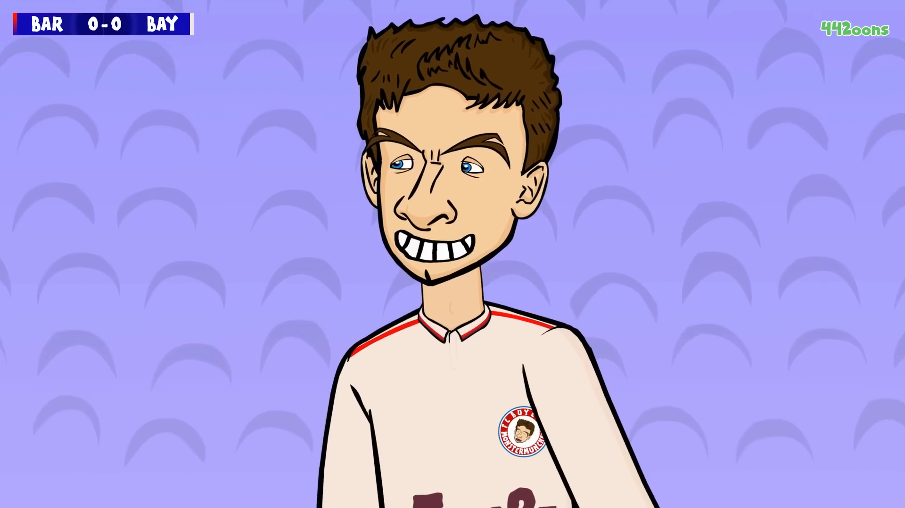
F60 · 2.00s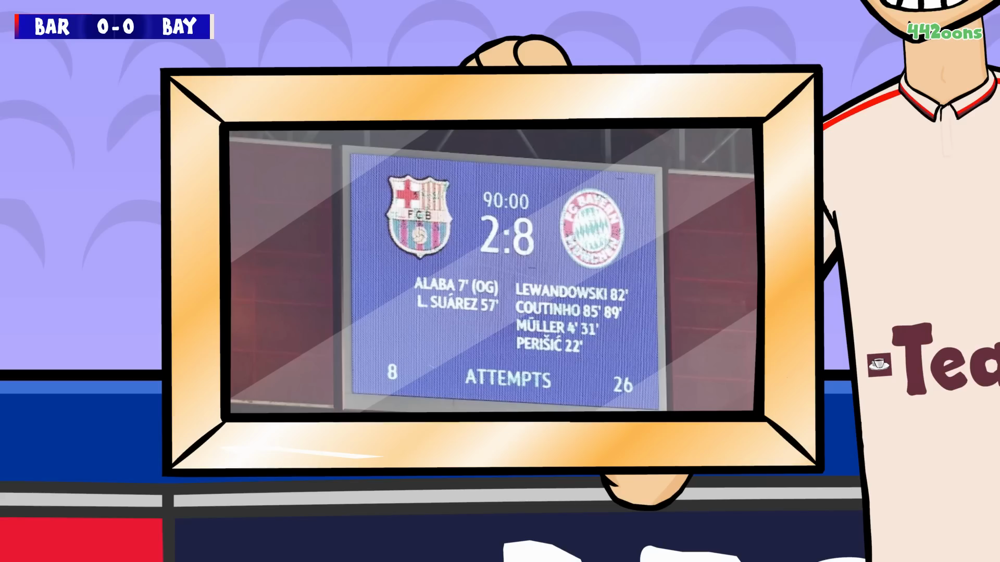
F150 · 5.00s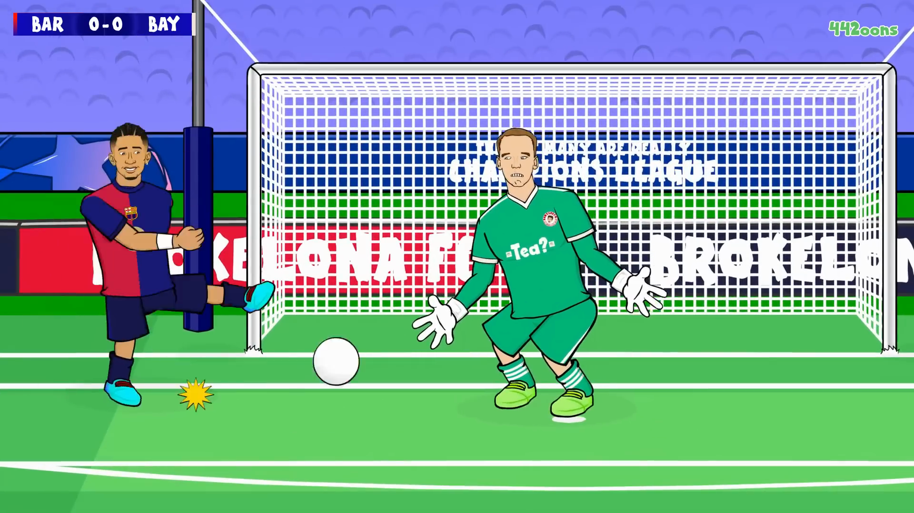
F432 · 14.40s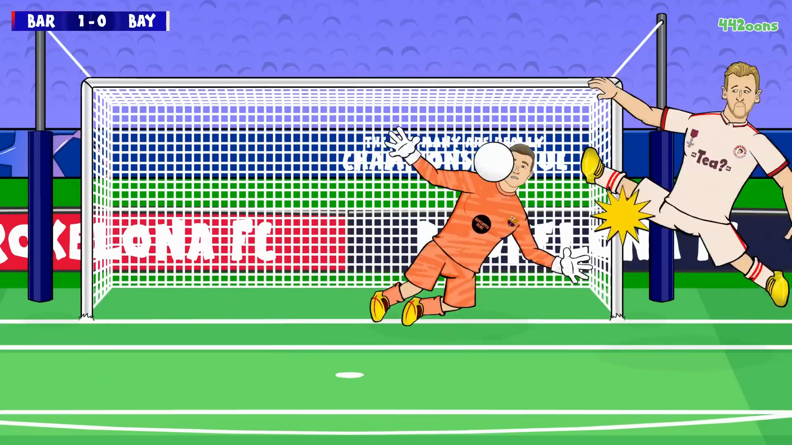
F648 · 21.60s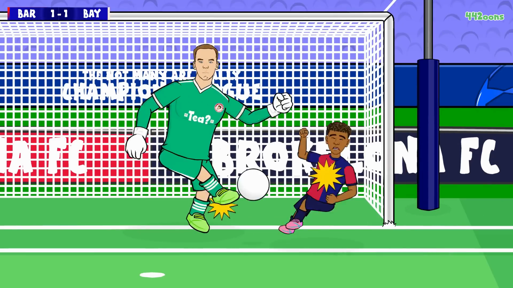
F783 · 26.10s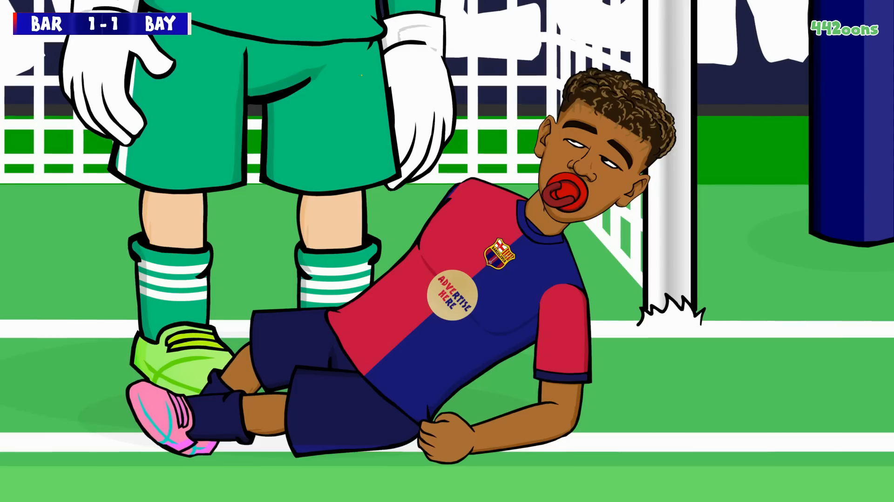
F930 · 31.00s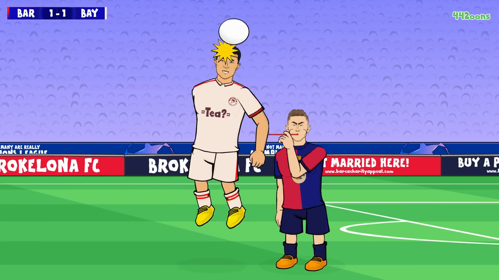
F1089 · 36.30s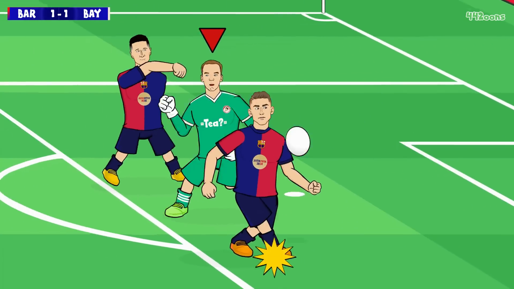
F1228 · 40.93s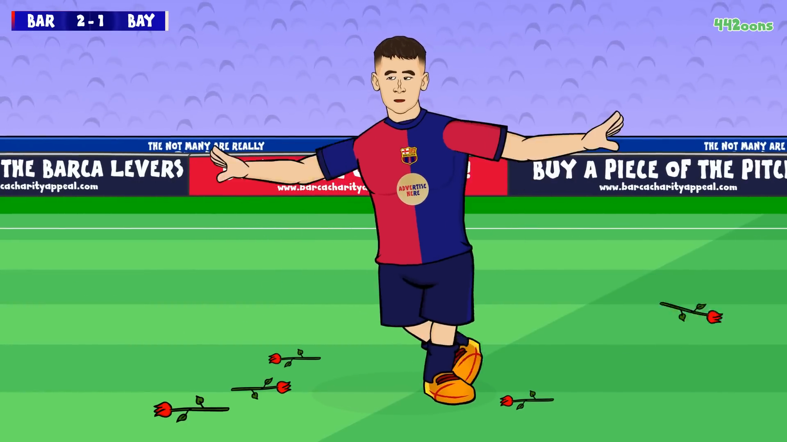
F1620 · 54.00s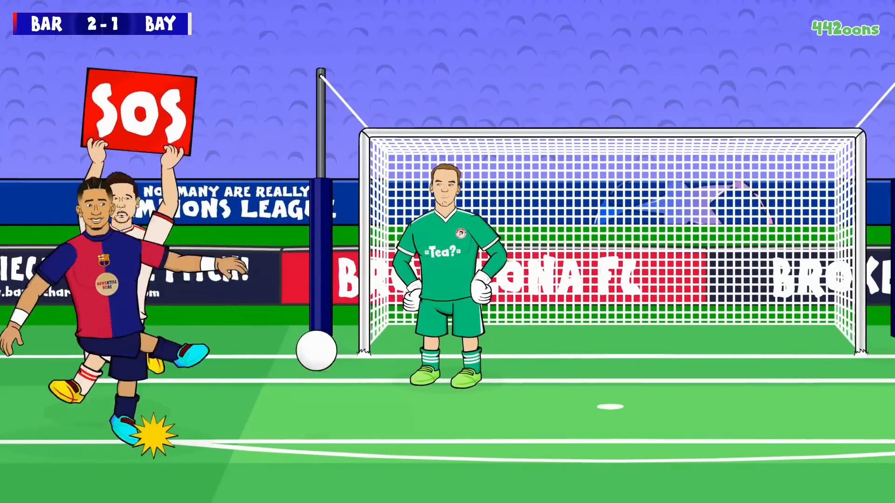
F1711 · 57.03s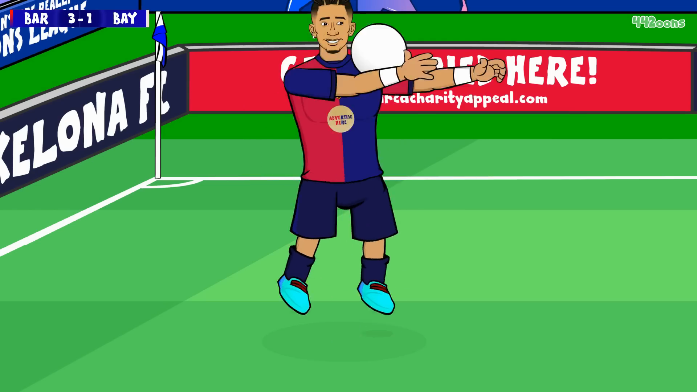
F2071 · 69.03s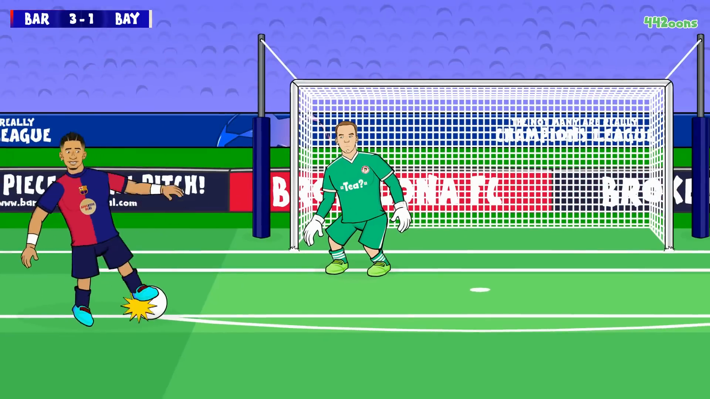
F2269 · 75.63s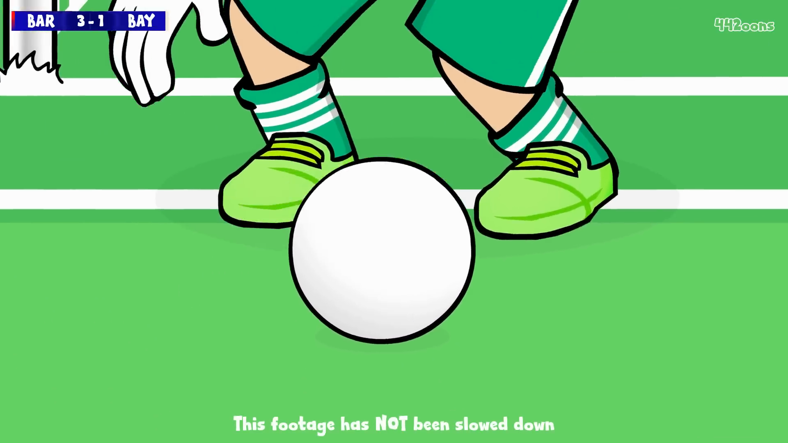
F2340 · 78.00s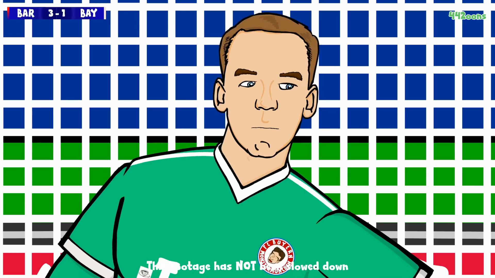
F2410 · 80.33s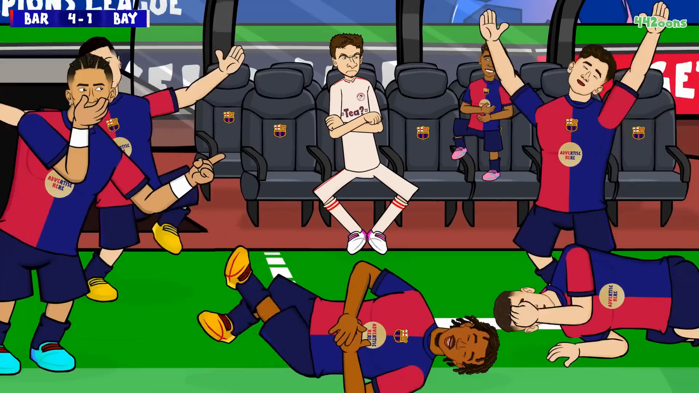
F2594 · 86.47s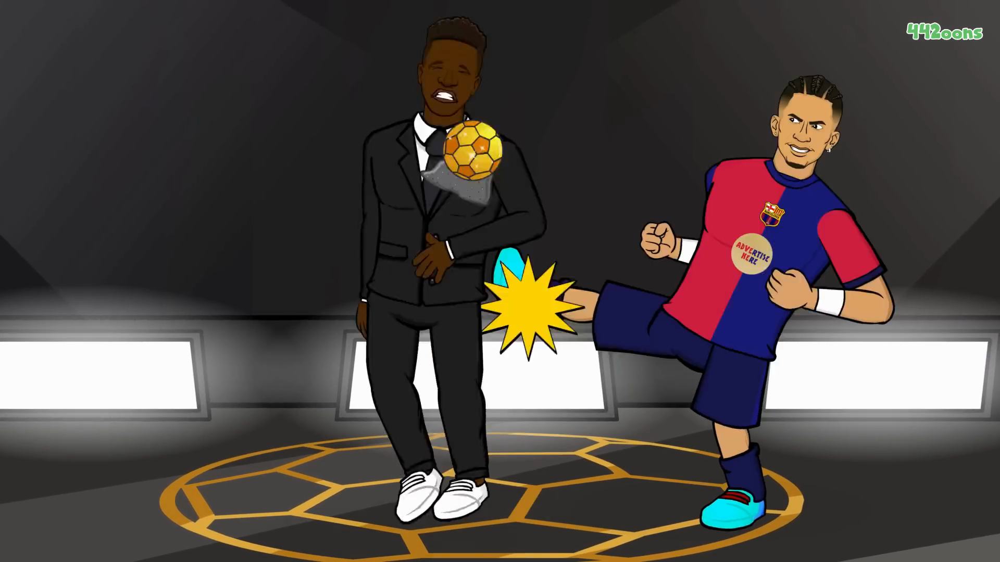
F2769 · 92.30s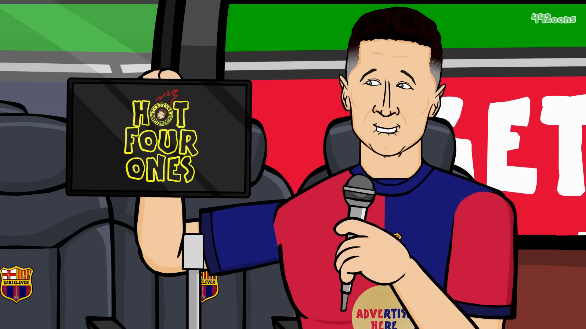
F3192 · 106.40s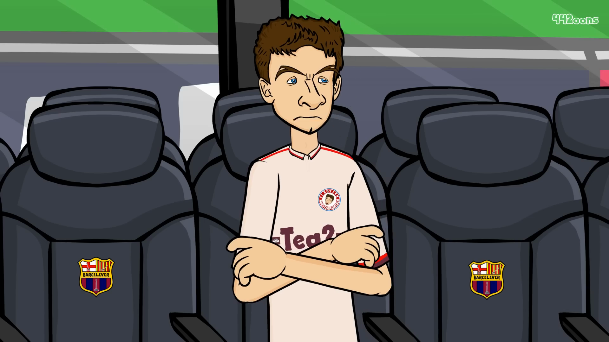
F3558 · 118.60s